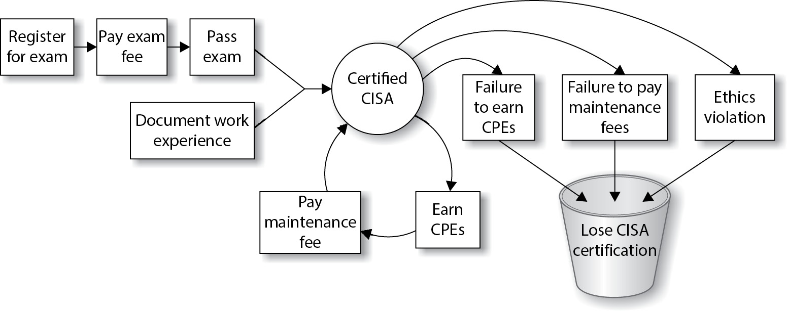
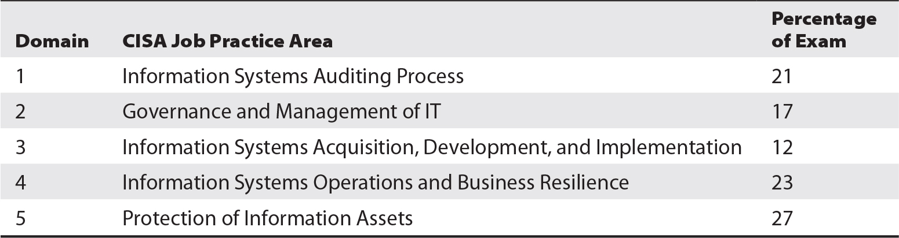
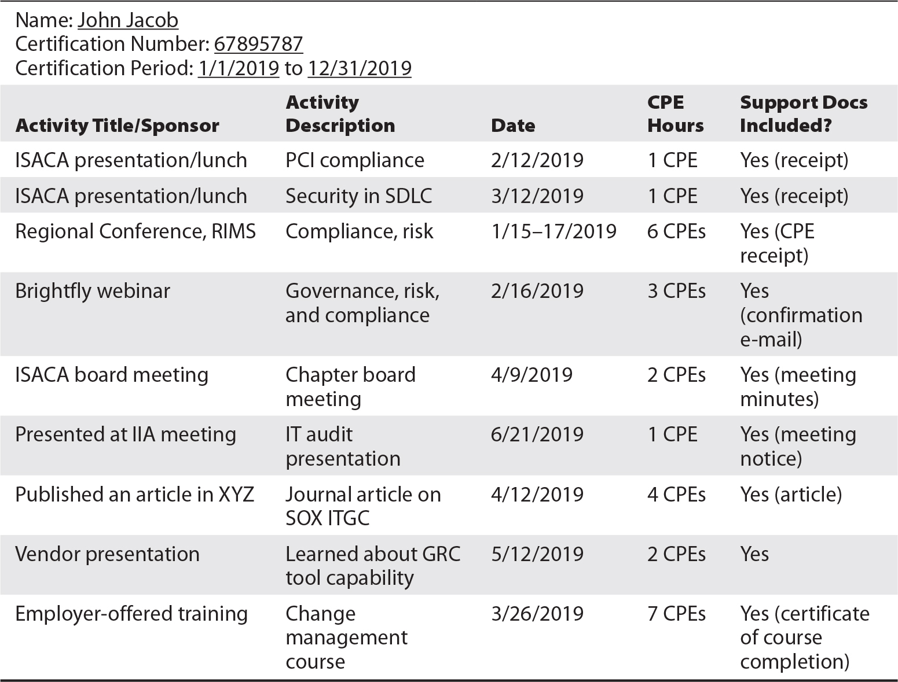

CHAPTER 1
Becoming a CISA
This chapter discusses the following topics:
• What it means to be a CISA-certified professional
• Getting to know ISACA, its code of ethics, and its standards
• Undergoing the certification process
• Applying for the exam
• Maintaining your certification
• Getting the most from your CISA journey
Congratulations on choosing to become a Certified Information Systems Auditor (CISA). Whether you have worked for several years in the field of information systems auditing or have just recently been introduced to the world of controls, assurance, and security, don’t underestimate the hard work and dedication required to obtain and maintain CISA certification. Although ambition and motivation are essential, the rewards of being CISA certified can far exceed the effort.
You probably never imagined you would find yourself working in the world of auditing or looking to obtain a professional auditing certification. Perhaps the increase in legislative or regulatory requirements for information system security led to your introduction to this field. Or possibly you noticed that CISA-related career options are increasing exponentially and you have decided to get ahead of the curve. You aren’t alone: since the inception of CISA certification in 1978, more than 129,000 professionals worldwide reached the same conclusion and have earned this well-respected certification. In 2009 and again in 2017, SC Magazine named CISA certification the winner of the Best Professional Certification Program, and in 2014 it was a finalist for the same award. The 2016 Global Knowledge IT Skills and Salary Report, as well as a recent IT Skills and Certifications Pay Index (ITSCPI) from Foote Partners, show the CISA certification among the highest-paying IT certifications. Welcome to the journey and the amazing opportunities that await you.
I have put together this information to help you understand the commitment needed, prepare for the exam, and maintain your certification. Not only is it my wish that you prepare for and pass the exam with flying colors, but I also provide you with the information and resources to maintain your certification and to represent yourself and the professional world of information system (IS) auditing proudly with your new credentials.
ISACA (formerly known as the Information Systems Audit and Control Association) is a recognized leader in the areas of control, assurance, and IT governance. Formed in 1967, this nonprofit organization represents more than 140,000 professionals in more than 180 countries. ISACA administers several exam certifications, including the CISA, the Certified Information Security Manager (CISM), the Certified in Risk and Information Systems Control (CRISC), and the Certified in the Governance of Enterprise IT (CGEIT) certifications. The certification program itself has been accredited by the American National Standards Institute (ANSI) under International Organization for Standardization and International Electrotechnical Commission standard ISO/IEC 17024:2012, which means that ISACA’s procedures for accreditation meet international requirements for quality, continuous improvement, and accountability.
If you’re new to ISACA, I recommend that you tour the organization’s web site (www.isaca.org) and become familiar with the guides and resources available. In addition, if you’re near one of the 200-plus local ISACA chapters in more than 80 countries worldwide, consider taking part in the activities and even reaching out to the chapter board for information on local meetings, training days, conferences, or study sessions. You may be able to meet other IS auditors who can give you additional insight into the CISA certification and the audit profession.
Established in 1978, the CISA certification primarily focuses on audit, controls, assurance, and security. It certifies the individual’s knowledge of testing and documenting IS controls and his or her ability to conduct formal IS audits. Organizations seek out qualified personnel for assistance with developing and maintaining strong control environments. A CISA-certified individual is a great candidate for this.
Through the phenomenon of digital transformation, organizations in every industry sector around the world are becoming increasingly reliant on information systems for daily business operations. Further, the upward trend in IT outsourcing in the form of Software-as-a-Service (SaaS), Platform-as-a-Service (PaaS), and Infrastructure-as-a-Service (IaaS) offerings means organizations are put in a position of having to trust those service providers that the SaaS, PaaS, and IaaS platforms are secure. This reliance compels organizations to rely heavily on IS auditors to provide assurances that IT environments have the necessary security, integrity, and resilience that today’s organizations require.
Benefits of CISA Certification
Obtaining the CISA certification offers several significant benefits:
• Expands knowledge and skills, builds confidence Developing knowledge and skills in the areas of audit, controls, assurance, and security can prepare you for advancement or expand your scope of responsibilities. The personal and professional achievement can boost confidence that encourages you to move forward and seek new career opportunities.
• Increases marketability and career options Because of various legal and regulatory requirements, such as the Health Insurance Portability and Accountability Act (HIPAA), the Payment Card Industry Data Security Standard (PCI-DSS), Sarbanes-Oxley (SOX), the Gramm-Leach-Bliley Act (GLBA), the Food and Drug Administration (FDA), the Federal Energy Regulatory Commission/North American Electric Reliability Corporation (FERC/NERC), the European General Data Protection Regulation (GDPR), and the California Consumer Privacy Act (CCPA), along with the growing need for information systems and automation, controls, assurance, and audit experience, demand is growing for individuals with experience in developing, documenting, and testing controls. In addition, obtaining your CISA certification demonstrates to current and potential employers your willingness and commitment to improve your knowledge and skills in information systems auditing. Having a CISA can provide a competitive advantage and open up many doors of opportunity in various industries and countries.
• Helps you meet other certification requirements The Payment Card Industry Qualified Security Assessor (PCI-QSA) certification requires that all certificate holders have a current security audit certification, either CISA or ISO 27001 Lead Auditor.
• Helps you meet employment requirements Many government agencies and organizations, such as the United States Department of Defense (DoD), require CISA certifications for positions involving IS audit activities. DoD Directive 8140.01 (formerly DoD Directive 8570.01-M) mandates that those personnel performing information assurance activities within the agency are certified with a commercial accreditation approved by the DoD. The DoD has approved the ANSI-accredited CISA certificate program because it meets ISO/IEC 17024:2012 requirements. All Information Assurance Technical (IAT) Level III personnel are mandated to obtain CISA certification, as are those who are contracted to perform similar activities.
• Builds customer confidence and international credibility Prospective customers needing control or audit work will have faith that the quality of the audits and controls documented or tested are in line with internationally recognized standards.
Regardless of your current position, demonstrating knowledge and experience in the areas of IT controls, audit, assurance, and security can expand your career options. The certification does not limit you to auditing; it can provide additional value and insight to those in or seeking the following positions:
• Executives such as chief executive officers (CEOs), chief financial officers (CFOs), and chief information officers (CIOs)
• Chief audit executives, audit partners, and audit directors
• Security and IT operations executives (chief technology officers [CTOs], chief information security officers [CISOs], chief information risk officers [CIROs], chief security officers [CSOs]), directors, managers, and staff
• Compliance executives and management
• Security and audit consultants
• Audit committee members
The CISA Certification Process
To become a CISA, you are required to pay the exam fee, pass the exam, prove that you have the required experience and education, and agree to uphold ethics and standards. To keep your CISA certification, you are required to take at least 20 continuing education hours each year (120 hours in three years) and pay annual maintenance fees. This is depicted in Figure 1-1.

Figure 1-1 The CISA certification life cycle
The following list outlines the major requirements for becoming certified:
• Experience A CISA candidate must be able to submit verifiable evidence of at least five years’ experience, with a minimum of two years’ professional work experience in IS auditing, control, assurance, or security. Experience can be in any of the job content areas, but it must be verified. For those with less than five years’ experience, substitution and waiver options for up to three years’ experience are available.
• Ethics Candidates must commit to adhere to ISACA’s Code of Professional Ethics, which guides the personal and professional conduct of those certified.
• Standards Those certified agree to abide by IS auditing standards and minimum guidelines for performing IS audits.
• Exam Candidates must receive a passing score on the CISA exam. A passing score is valid for up to five years, after which the score is void. This means that a CISA candidate who passes the exam has a maximum of five years to apply for CISA certification; candidates who pass the exam but fail to act after five years will have to take the exam again if they want to become CISA certified.
• Application After successfully passing the exam, meeting the experience requirements, and having read through ISACA’s Code of Professional Ethics and Information Systems Auditing Standards, a candidate is ready to apply for certification. An application must be received within five years of passing the exam.
• Education Those certified must adhere to the CISA Continuing Education Policy, which requires a minimum of 20 continuing professional education (CPE) hours each year, with a total requirement of 120 CPEs over the course of the certification period (three years).
Experience Requirements
To qualify for CISA certification, you must have completed the equivalent of five years’ total work experience. These five years can take many forms, with several substitutions available. Additional details on the minimum certification requirements, substitution options, and various examples are discussed next.

NOTE Although it is not recommended, a CISA candidate can take the exam before completing any work experience directly related to IS auditing. As long as the candidate passes the exam and the work experience requirements are fulfilled within five years of the exam date, and within ten years from application for certification, the candidate is eligible for certification.
Direct Work Experience
You are required to have a minimum of two years’ work experience in the field of IS audit, controls, or security. This is equivalent to 4,000 actual work hours, which must be related to one or more of the five following CISA job practice areas:
• Information Systems Auditing Process Planning and conducting information systems audits in accordance with IS standards and best practices, communicating results, and advising on risk management and control practices.
• Governance and Management of IT Ensuring that adequate organizational structures and processes are in place to align and support the organization’s strategies and objectives.
• Information Systems Acquisition, Development, and Implementation Ensuring that appropriate processes and controls are in place for the acquisition, development, testing, and implementation of information systems in order to provide reasonable assurance that the organization’s strategies and objectives will be met.
• Information Systems Operations and Business Resilience Ensuring that systems and infrastructure have appropriate operations, maintenance, and service management processes and controls in place to support meeting the organization’s strategies and objectives.
• Protection of Information Assets Ensuring that the organization’s security policies, standards, procedures, and controls protect the confidentiality, integrity, and availability of information assets.
All work experience must be completed within the ten-year period before completing the certification application or within five years from the date of initially passing the CISA exam. You will need to complete a separate Verification of Work Experience form for each segment of experience.
There is only one exception to this minimum two-year direct work experience requirement: if you are a full-time instructor. This option is discussed in the next section.
Substitution of Experience
Up to a maximum of three years’ direct work experience can be substituted with the following to meet the five-year experience requirement:
• One year of information systems or one year of non-IS auditing experience can be substituted for up to one year of direct work experience.
• Completion of a two- or four-year degree (60 to 120 completed university semester credit hours), regardless of when completed, can be substituted for one or two years of direct work experience, respectively. Transcripts or a letter confirming degree status must be sent from the university attended to obtain the experience waiver.
• If you have completed a bachelor’s or master’s degree from a university that enforces an ISACA-sponsored curriculum, it can be substituted for one or two years of direct work experience, respectively (for information on ISACA-sponsored Model Curricula and participating universities, see www.isaca.org/modeluniversities). Transcripts or a letter confirming degree status must be sent from the university to obtain an experience waiver. This option cannot be used if you have already substituted or waived three years of direct work experience.
• Association of Chartered Certified Accountants (ACCA) members and Chartered Institute of Management Accountants (CIMA) members with full certification can apply for a two-year educational waiver.
• Those applying with a master’s degree in information systems or information technology (IT) from an accredited university can apply for a one-year experience waiver.
As noted, there is only one exception to the experience requirements. Should you have experience as a full-time university instructor in a related field (that is, information security, computer science, or accounting), each two years of your experience can be substituted for one year of required direct work experience, without limitation.
Here is an example CISA candidate whose experience and education are considered for CISA certification:
Jane Doe graduated in 2004 with a bachelor’s degree in accounting. She spent five years working for an accounting firm conducting non-IS audits, and in January 2009, she began conducting IS audits full time. In January 2011, she took some time off work for personal reasons and rejoined the workforce in December 2017, working for a public company in its internal audit department documenting and testing financial controls. Jane passed the CISA exam in June 2018 and applied for CISA certification in January 2019. Does Jane have all of the experience required? What evidence will she need to submit?
• Two-year substitution Jane obtained a bachelor’s degree in accounting, which equates to two years’ experience substitution.
• Two years’ direct experience She can count her two full years of IS audit experience (in 2009 and 2010).
• One-year substitution She cannot take into account one year of non-IS audit experience completed between January 2008 to January 2009, as it was not completed within ten years of application.
• One-year substitution Jane would want to utilize her new internal audit financial controls experience for experience substitution rather than her earlier non-IS audit experience.
Jane would need to send the following with her application to prove experience requirements are met:
• Verification of Work Experience forms filled out and signed by her supervisors (or any superior) at the accounting firm, verifying both the IS and non-IS audit work conducted.
• Transcripts or letter confirming degree status sent from the university.
NOTE I recommend you also read the CISA certification qualifications on the ISACA web site. From time to time, ISACA changes the qualification rules, and I want you to have the most up-to-date information available.
ISACA Code of Professional Ethics
Becoming a CISA means that you agree to adhere to the ISACA Code of Professional Ethics, a formal document outlining those things you will do to ensure the utmost integrity and that best support and represent the organization and certification.
The ISACA Code of Professional Ethics requires ISACA members and certification holders to do the following (from www.isaca.org/Certification/Code-of-Professional-Ethics/Pages/default.aspx):
1. Support the implementation of, and encourage compliance with, appropriate standards and procedures for the effective governance and management of enterprise information systems and technology, including: audit, control, security and risk management.
2. Perform their duties with objectivity, due diligence and professional care, in accordance with professional standards.
3. Serve in the interest of stakeholders in a lawful manner, while maintaining high standards of conduct and character, and not discrediting their profession or the Association.
4. Maintain the privacy and confidentiality of information obtained in the course of their activities unless disclosure is required by legal authority. Such information shall not be used for personal benefit or released to inappropriate parties.
5. Maintain competency in their respective fields and agree to undertake only those activities they can reasonably expect to complete with the necessary skills, knowledge and competence.
6. Inform appropriate parties of the results of work performed including the disclosure of all significant facts known to them that, if not disclosed, may distort the reporting of the results.
7. Support the professional education of stakeholders in enhancing their understanding of the governance and management of enterprise information systems and technology, including: audit, control, security and risk management.
Failure to follow the code of ethics can result in an investigation of the person’s actions; potential disciplinary measures range from a written warning to the loss of certification and/or membership.
You’ll find the full text and terms of enforcement of the ISACA Code of Ethics at www.isaca.org/ethics.
ISACA IS Standards
An auditor can gather information from several credible resources to conduct an audit with integrity and confidence. ISACA has developed its own set of standards of mandatory requirements for IS auditing and reporting, known as the ITAF: Information Technology Assurance Framework.
ITAF offers multiple levels of IS audit and assurance guidance: standards, guidelines, and tools and techniques. Standards are higher level mandatory requirements that inform IS audit and assurance professionals of minimal performance expectations. Guidelines provide additional guidance in applying the standards, while tools and techniques provide examples of procedures that audit and assurance professionals may follow.
As a CISA, you are required to abide by and promote the IS standards where applicable, encouraging compliance and supporting their implementation. As you prepare for certification and beyond, you will need to read through and become familiar with these standards. These standards were created to define the minimum level of acceptable performance needed to meet the professional requirements as defined by ISACA and to help set expectations. They have been established, vetted, and approved by ISACA.
For more about ITAF, visit www.isaca.org/itaf.
General standards represent guiding principles by which the profession conducts IT audit and assurance activities. General standards include
• Audit charter
• Organizational independence
• Professional independence
• Reasonable expectation
• Due professional care
• Proficiency
• Assertions
• Criteria
Performance standards focus on the IT audit or assurance professional’s conduct of assurance activities—such as the design, evidence, findings, and conclusions. These standards include
• Engagement planning
• Risk assessment in planning
• Performance and supervision
• Materiality
• Evidence
• Using the work of other experts
• Irregularity and illegal acts
Reporting standards cover the report produced by the IT audit or assurance professional, such as
• Reporting
• Follow-up activities
NOTE I recommend that you check the ISACA web site periodically for updates to these standards. As an ISACA member, you will automatically be notified when changes have been submitted and the documents are open for review (www.isaca.org/standards).
The Certification Exam
The certification exam is offered almost continuously throughout the year in periods known as testing windows that are generally several months in length. The ISACA web site will have information about current testing windows and sometimes about future testing windows. When you begin planning for your CISA examination, you’ll want to consult the ISACA web site to see what scheduling options are available in your testing window. Other terms and conditions change from time to time, from one testing window to the next.
In 2019, the schedule of exam fees in U.S. dollars was
• CISA application fee: $50
• Regular registration: $575 member/$760 nonmember
The exam is administered by an ISACA-approved testing vendor, PSI Services, at numerous locations. For additional details on the locations nearest you, go to www.isaca.org/examlocations.
Once registration is complete, you will immediately receive an e-mail acknowledging your registration, and within four weeks of processing you will receive a hard copy of the letter and a registration receipt in the mail. Two to three weeks prior to the test date you will receive an exam admission ticket via e-mail and regular mail. You will need the admission ticket to enter the test site—be sure to keep it unmarked and in a safe place until test time.
Each registrant has four hours to take the multiple-choice-question exam. There are 150 questions on the computerized exam representing the five job practice areas. Each question has four answer choices; test-takers can select only one best answer by clicking it. You will be scored for each job practice area and then provided one final score. Before you close out the computerized exam, you will be notified of your tentative pass/fail status. All exam scores are scaled. Scores range from 200 to 800; however, a final score of 450 is required to pass.
Exam questions are derived from a job practice analysis study conducted by ISACA. The areas selected represent those tasks performed in a CISA’s day-to-day activities and represent the background knowledge required to perform IS audit, control, assurance, and security tasks. More detailed descriptions of the task and knowledge statements can be found at www.isaca.org/cisajobpractice.
The CISA exam is quite broad in its scope. The exam covers five job practice areas, as shown in Table 1-1.

Table 1-1 CISA Exam Practice Areas
Independent committees have been developed to determine the best questions, review exam results, and statistically analyze the results for continuous improvement. Should you come across a horrifically difficult or strange question, do not panic. This question may have been written for another purpose. A few questions on the exam are included for research and analysis purposes and will not be counted against your score.
Exam Preparation
The CISA certification requires a great deal of knowledge and experience from the CISA candidate. You need to map out a long-term study strategy to pass the exam. The following sections offer some tips and are intended to help guide you to, through, and beyond exam day.
Before the Exam
Consider the following list of tips on tasks and resources for exam preparation. They are listed in sequential order.
• Read the ISACA Exam Candidate Information Guide For information on the certification exam and requirements for the current year, see www.isaca.org/Certification/Pages/Candidates-Guide-for-Exams.aspx. Be sure to download the correct (usually the most recent) version of the guide.
• Register Register to solidify your commitment to moving forward with this professional achievement.
• Become familiar with the CISA job practice areas The job practice areas serve as the basis for the exam and requirements. Beginning with the June 2019 exam, the job practice areas have changed. Ensure that your study materials align with the current list at www.isaca.org/cisajobpractice.
• Self-assess Run through the questions in the two practice exams, provided as additional resources with this book; see Appendix C for more information. You may also go to the ISACA web site for a free 50-question CISA self-assessment.
• Iterative study Depending on how much work experience in IS auditing you have already, I suggest you plan your study program to take at least two months but as long as six months. During this time, periodically take practice exams and note your areas of strength and weakness. Once you have identified your weak areas, focus on those areas weekly by rereading the related sections in this book and retaking practice exams, and note your progress.
• Avoid cramming We’ve all seen the books on the shelves with titles that involve last-minute cramming. Just one look on the Internet reveals a variety of web sites that cater to teaching individuals how to cram for exams most effectively. There are also research sites claiming that exam cramming can lead to susceptibility to colds and flu, sleep disruptions, overeating, and digestive problems. One thing is certain: many people find that good, steady study habits result in less stress and greater clarity and focus during the exam. Because of the complexity of this exam, I highly recommend the long-term, steady-study option. Study the job practice areas thoroughly. There are many study options. If time permits, investigate the many resources available to you.
• Find a study group Many ISACA chapters have formed specific study groups or offer less expensive exam review courses. Contact your local chapter to see if these options are available to you. In addition, be sure to keep your eye on the ISACA web site.
• Admission ticket Approximately two to three weeks before the exam, you will receive your admission ticket. Do not write on or lose this ticket. Put it in a safe place, and take note of what time you will need to arrive at the site. Note this on your calendar.
• Logistics check Check the Candidate Information Guide and your admission ticket for the exact time you are required to report to the test site. Check the site a few days before the exam—become familiar with the location and tricks to getting there. If you are taking public transportation, be sure that you are looking at the schedule for the day of the exam. If you are driving, know the route and know where to park your vehicle.
• Pack Place your admissions ticket and a photo ID in a safe place, ready to go. Your ID must be a current, government-issued photo ID that matches the name on the admission ticket and must not be handwritten. Examples of acceptable forms of ID are passports, driver’s licenses, state IDs, green cards, and national IDs. Make sure you leave food, drinks, laptops, cell phones, and other electronic devices behind, as they are not permitted at the test site. For information on what can and cannot be brought to the exam site, see www.isaca.org/cisabelongings.
• Notification decision Decide whether you want your exam results e-mailed to you. You will have the opportunity to consent to e-mail notification of the exam results. If you are fully paid (zero balance on exam fee) and have consented to the e-mail notification, you should receive a single e-mail a few weeks from the date of the exam with your exam results.
• Sleep Get a sound night’s sleep before the exam. Research suggests that you should avoid caffeine at least four hours before bedtime, keep a notepad and pen next to the bed to capture late-night thoughts that might keep you awake, eliminate as much noise and light as possible, and keep your room a good temperature for sleeping. In the morning, arise early so as not to rush and subject yourself to additional stress.
Day of the Exam
Consider the following list of tips that can help you on exam day:
• Arrive early Check the Candidate Information Guide and your admission ticket for the exact time you are required to report to the test site. The ticket and the Candidate Information Guide explain that you must be at the test site no later than approximately 30 minutes before testing time. If you are late, you may miss your opportunity to take the exam on that day, and you’ll have to reschedule your exam.
• Observe test center rules There may be rules about taking breaks. This will be discussed by the examiner along with exam instructions. If at any time during the exam you need something and are unsure as to the rules, be sure to ask first. For information on conduct during the exam, see www.isaca.org/cisabelongings.
• Answering exam questions Read questions carefully, but do not try to overanalyze. Remember to select the best solution. There may be several reasonable answers, but one is better than the others.
After the Exam
Although you’ll be shown your preliminary pass/fail results when you have completed and closed your exam, you will receive your official exam results by e-mail or regular mail within a few weeks from the date of the exam. Each job practice area score will be noted in addition to the overall final score. Should you receive a passing score, you will also receive the application for certification.
Those unsuccessful in passing will also be notified. These individuals will want to take a close look at the job practice area scores to determine areas for further study. They may retake the exam as many times as needed on future exam dates, as long as they have registered and paid the applicable fees. Regardless of pass or fail, exam results will not be disclosed via telephone, fax, or e-mail (with the exception of the consented one-time e-mail notification).
Applying for CISA Certification
To apply for certification, you must be able to submit evidence of a passing score and related work experience. Keep in mind that once you receive a passing score, you have five years to use this score on a CISA application. After this time, you will need to take the exam again. In addition, all work experience submitted must have been within ten years of your new certification application.
To complete the application process, you need to submit the following information:
• CISA application Note the exam ID number located in your exam results letter; list the information systems audit, control, security experience, and/or any experience substitutions; and identify which ISACA job practice area(s) the experience pertains to.
• Verification of Work Experience form(s) These must be filled out and signed by your immediate supervisor or a person of higher rank in the organization to verify work experience noted on the application. You must fill out a complete set of Work Experience forms for each separate employer.
• Transcript or letter If you are using an educational experience waiver, you must submit an original transcript or a letter from the college or university confirming degree status.
As with the exam, after you’ve successfully mailed the application, you must wait approximately eight weeks for processing. If your application is approved, you will receive a package in the mail containing your letter of certification, a certificate, and a copy of the Continuing Education Policy. You can then proudly display your certificate and use the designation (“CISA”) on your CV, résumé, e-mail profile, or business cards.
Retaining Your CISA Certification
There is more to becoming a CISA than merely passing an exam, submitting an application, and receiving a paper certificate. Being a CISA is an ongoing lifestyle. Those with the CISA certification not only agree to abide by the Code of Professional Ethics and adhere to the IS standards, but they must also meet ongoing education requirements and pay certification maintenance fees. Let’s take a closer look at the education requirements and explain the fees involved in retaining certification.
Continuing Education
The goal of continuing professional education (CPE) requirements is to ensure that individuals maintain CISA-related knowledge so that they can better manage, assess, and design controls around IS. To maintain CISA certification, individuals must obtain 120 CPE hours within three years, with a minimum requirement of 20 hours per year. Each CPE hour is to account for 50 minutes of active participation in educational activities.
What Counts as a Valid CPE Credit?
In order for training and activities to be utilized for CPEs, they must involve technical or managerial training that is directly applicable to IS assessments, audit, controls, or security. The following list of activities has been approved by the CISA certification committee and can count toward your CPE requirements:
• ISACA professional education activities and meetings.
• If you are an ISACA member, you can take ISACA Journal CPE Quizzes online or participate in monthly webcasts. For each webcast, CPEs are rewarded after you pass a quiz.
• Non-ISACA professional education activities and meetings.
• Self-study courses.
• Vendor sales or marketing presentations (ten-hour annual limit).
• Teaching, lecturing, or presenting on subjects related to job practice areas.
• Publication of articles and books related to the profession.
• CISA exam question development and review.
• Passing related professional examinations.
• Participation in ISACA boards or committees (20-hour annual limit per ISACA certification).
• Contributions to the IS audit and control profession (ten-hour annual limit).
• Mentoring (ten-hour annual limit).
For more information on what is accepted as a valid CPE credit, see the continuing professional education policy (www.isaca.org/cisacpepolicy).
Tracking and Submitting CPEs
Not only are you required to submit a CPE tracking form for the annual renewal process, but you also should keep detailed records for each activity. Records associated with each activity should include the following:
• Name of attendee
• Name of sponsoring organization
• Activity title
• Activity description
• Activity date
• Number of CPE hours awarded
It is in your best interest to track all CPE information in a single document or worksheet. ISACA has developed a Verification of Attendance form for your use at www.isaca.org/cisacpepolicy. To make it easy on yourself, consider keeping all related records such as receipts, brochures, and certificates in the same place. Retain documentation throughout the three-year certification period and for one additional year afterward. This is especially important, because you may someday be audited. If this happens, you would be required to submit all paperwork. So why not be prepared?
For new CISAs, the annual and three-year certification period begins January 1 of the year following certification. You are not required to report CPE hours for the first partial year after your certification; however, the hours earned from the time of certification to December 31 can be utilized in the first certification reporting period the following year. Therefore, should you get certified in January, you will have until the following January to accumulate CPEs and will not have to report them until you report the totals for the following year, which will be in October or November. This is known as the renewal period. During this time, you will receive an e-mail directing you to the web site to enter CPEs earned over the course of the year. Alternatively, the renewal will be mailed to you, and you can record CPEs on the hard-copy invoice and send them with your maintenance fee payment. CPEs and maintenance fees must be received by January 15 to retain certification.
Notification of compliance from the certification department is sent after all of the information has been received and processed. Should ISACA have any questions about the information you have submitted, they will contact you directly.
Sample CPE Submission
Table 1-2 contains an example of a CPE submission.

Table 1-2 Sample CPE Submission
CPE Maintenance Fees
To remain CISA certified, you must pay CPE maintenance fees each year. These fees are (as of 2019) $45 for members and $85 for nonmembers each year. These fees are in addition to ISACA membership and local chapter dues (which are not required to maintain your CISA certification).
Revocation of Certification
A CISA-certified individual may have his or her certification revoked for the following reasons:
• Failure to complete the minimum number of CPEs during the required period.
• Failure to document and provide evidence of CPEs in an audit.
• Failure to submit payment for maintenance fees.
• Failure to comply with the Code of Professional Ethics; this can result in investigation and ultimately lead to revocation of certification.
If you have received a revocation notice, you will need to contact the ISACA Certification Department at certification@isaca.org for more information.
CISA Exam Preparation Pointers
Following are a few general pointers for exam prep:
• Register for the exam early to ensure that you can take the exam at a location and date of your choosing.
• When studying for the exam, take as many practice exams as possible.
• Memorization will not work—for this exam, it is critical that you understand the concepts.
• If you have time while studying for the exam, begin gathering relevant Work Experience Verification forms from past employers and original transcripts from your college or university (if using the education experience waiver).
• Do not arrive late to the exam site. Latecomers are immediately disqualified and they forfeit exam fees.
• Begin keeping track of CPEs as soon as you obtain certification.
• Mark your calendar for CPE renewal time, which begins in October/November each year and ends January 15. Don’t wait for the e-mail; set your own reminder.
• Become familiar with the Code of Professional Ethics and IS standards.
• Become involved in your local ISACA chapter for networking and educational opportunities.
Summary
Becoming and being a CISA is a lifestyle, not just a one-time event. It takes motivation, skill, good judgment, and proficiency to be a strong leader in the world of information systems auditing. The CISA was designed to help you navigate the IS auditing world with greater ease and confidence.
In the following chapters, each CISA job practice area is discussed in detail, and additional reference material is presented. Not only is this information useful for studying prior to the exam, but it is also meant to serve as a resource throughout your career as an audit professional.